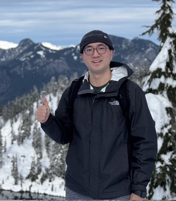

|
 |
Yang YangAI Research Scientist, Meta Email: |
About me
I am a Staff AI Research Scientist at Meta, working on AI agents and large-scale recommendation systems. Recent work: AI agents for ML engineering: STARK [ICLR ’26], ArchPilot; LLMs for Recommendation Systems (LLM4Rec): Unity [KDD ’26], Semantic ID [RecSys ’25], User-Centric Ranking [KDD ’23].
My Ph.D. at the University of Minnesota focused on language-guided robotic grasping and embodied perception (ICRA ’22 Outstanding Student Paper Award, T-RO ’24).
Happy to chat about AI agents, LLM4Rec, and embodied AI.
Professional Experience
Meta, Bellevue, WA | Since March 2022
Staff AI Research Scientist (Tech Lead), AI agents and LLMs for Recommendation.Mitsubishi Electric Research Laboratories (MERL), Cambridge, MA | Summer 2020
Research Intern, Computer Vision.Google, Mountain View, CA | Summer 2018
Software Engineering Intern, Visual-Inertial Systems.
Publications
See Google Scholar for the complete list.
LLMs, Agents & Generative Models
STARK: Strategic Team of Agents for Refining Kernels [PDF]
Juncheng Dong, Yang Yang, Tao Liu, Yang Wang, Feng Qi, Vahid Tarokh, Kaushik Rangadurai, Shuang Yang
International Conference on Learning Representations (ICLR), 2026ArchPilot: A Proxy-Guided Multi-Agent Approach for Machine Learning Engineering [PDF]
Zhuowen Yuan, Tao Liu, Yang Yang, Yang Wang, Feng Qi, Kaushik Rangadurai, Bo Li, Shuang Yang
ICLR Workshop on MAL-GAI, 2026Tokenize, Diffuse, Decode: A Generative Approach to Neighborhood Discovery on Graphs [PDF]
Zhuowen Yuan, Tao Liu, Kaushik Rangadurai, Yang Yang, Minhui Huang, Yiping Han, Bo Li, Shuang Yang
ICLR Workshop on DeLTa, 2026GraphQ-LM: Scalable Graph Representation for Large Language Models via Residual Vector Quantization [PDF]
Jiawei Zhang, Yang Yang, Kaushik Rangadurai, Tao Liu, Minhui Huang, Yiping Han, Bo Li, Shuang Yang
Under review, NeurIPS 2026
Recommender Systems
Unity: Fully Self-Supervised Pretraining with Transformers for Recommendation [PDF]
Shuang Yang, Yang Yang, Tao Liu, Feng Qi, Kaushik Rangadurai, Luke Simon, Sandeep Pandey
ACM SIGKDD Conference on Knowledge Discovery and Data Mining (KDD), 2026Enhancing Embedding Representation Stability in Recommendation Systems with Semantic ID [PDF]
Carolina Zheng, Minhui Huang, Dmitrii Pedchenko, Kaushik Rangadurai, Siyu Wang, Gaby Nahum, Jie Lei, Yang Yang, et al.
ACM Conference on Recommender Systems (RecSys), 2025Breaking the Curse of Quality Saturation with User-Centric Ranking [PDF]
Zhuokai Zhao, Yang Yang, Wenyu Wang, Chihuang Liu, Yu Shi, Wenjie Hu, Haotian Zhang, Shuang Yang
ACM SIGKDD Conference on Knowledge Discovery and Data Mining (KDD), 2023
Embodied AI & Robotics
A Parameter-Efficient Tuning Framework for Language-Guided Object Grounding and Robot Grasping [PDF]
Houjian Yu, Yang Yang, Mingen Li, Alireza Rezazadeh, Yiming Lu, Changhyun Choi
IEEE International Conference on Robotics and Automation (ICRA), 2025Attribute-Based Robotic Grasping with Data-Efficient Adaptation [PDF] [Website] [Video]
Yang Yang, Houjian Yu, Xibai Lou, Yuanhao Liu, Changhyun Choi
IEEE Transactions on Robotics (T-RO), 2024Adversarial Object Rearrangement in Constrained Environments with Heterogeneous Graph Neural Networks [PDF] [Website] [Video]
Xibai Lou, Houjian Yu, Ross Worobel, Yang Yang, Paul Rosen, Changhyun Choi
IEEE/RSJ International Conference on Intelligent Robots and Systems (IROS), 2023IOSG: Image-Driven Object Searching and Grasping [PDF] [Website]
Houjian Yu, Xibai Lou, Yang Yang, Changhyun Choi
IEEE/RSJ International Conference on Intelligent Robots and Systems (IROS), 2023Interactive Robotic Grasping with Attribute-Guided Disambiguation [PDF] [Website] [Video]
Yang Yang, Xibai Lou, Changhyun Choi
IEEE International Conference on Robotics and Automation (ICRA), 2022 (Outstanding Student Paper Award)Learning Object Relations with Graph Neural Networks for Target-Driven Grasping in Dense Clutter [PDF] [Website]
Xibai Lou, Yang Yang, Changhyun Choi
IEEE International Conference on Robotics and Automation (ICRA), 2022A Deep Learning Approach to Grasping the Invisible [PDF] [Website] [Code]
Yang Yang, Hengyue Liang, Changhyun Choi
IEEE Robotics and Automation Letters (RA-L), 2020Attribute-Based Robotic Grasping with One-Grasp Adaptation [PDF] [Website]
Yang Yang, Yuanhao Liu, Hengyue Liang, Xibai Lou, Changhyun Choi
IEEE International Conference on Robotics and Automation (ICRA), 2021Collision-Aware Target-Driven Object Grasping in Constrained Environments [PDF]
Xibai Lou, Yang Yang, Changhyun Choi
IEEE International Conference on Robotics and Automation (ICRA), 2021Learning Visual Affordances with Target-Orientated Deep Q-Network [PDF] [Website]
Hengyue Liang, Xibai Lou, Yang Yang, Changhyun Choi
IEEE International Conference on Robotics and Automation (ICRA), 2021Learning to Generate 6-DoF Grasp Poses with Reachability Awareness [PDF] [Website]
Xibai Lou, Yang Yang, Changhyun Choi
IEEE International Conference on Robotics and Automation (ICRA), 2020Attitude Tracking from a Camera and an Accelerometer on Gyro-less Devices
Tien Do, Leo Neira, Yang Yang, Stergios I. Roumeliotis
International Symposium on Robotics Research (ISRR), 2019